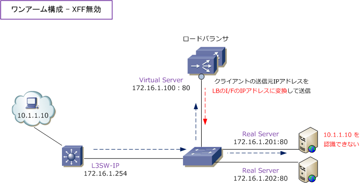
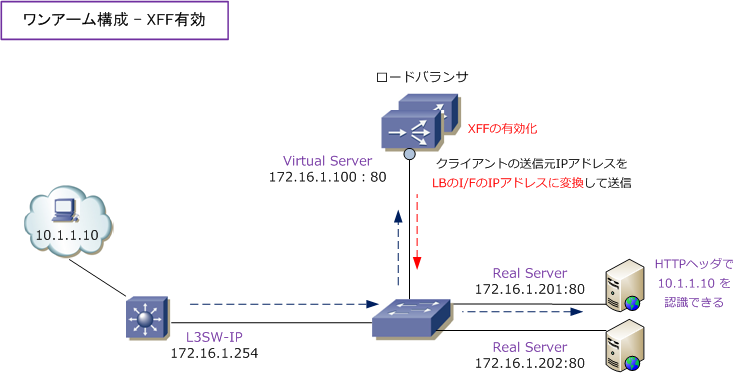
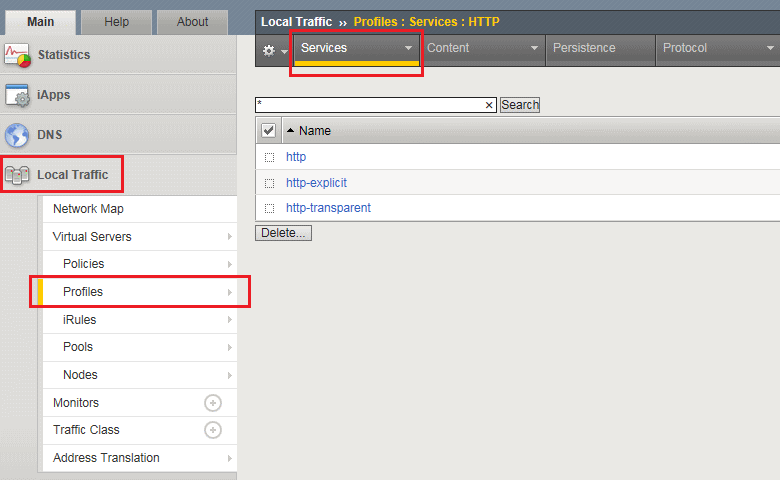
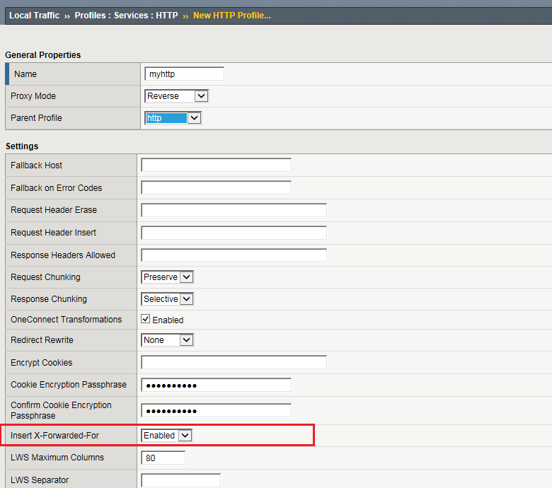
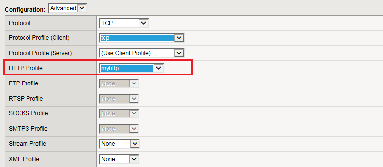

XFF （ X-Forwarded-For ）
XFF（ X-Forwarded-For ）とは
X-Forwarded-Forとは、HTTPヘッダフィールドの1つであり、ロードバランサなどの機器を経由して Webサーバに接続するクライアントの送信元IPアドレスを特定する際のデファクトスタンダードです。 クライアントの送信元IPアドレスの特定は、ロードバランサなどでクライアントの送信元IPアドレスが 変換された場合でも、HTTPヘッダに元のクライアントIPアドレスの情報を付加することで実現します。
XFF（ X-Forwarded-For ）を使用しない場合
例えば、下図のようにワンアーム構成において「行き」と「戻り」のパケットが同じ経路を通るように クライアントの送信元IPアドレスを、ロードバランサのI/FのIPアドレスに変換して送信するとします。 通信自体は正常に行われますが、リアルサーバに着信したパケットの送信元IPは、ロードバランサのI/F のIPアドレスのため、実際のクライアントの送信元IPアドレスが分からない状態になります。

XFF（ X-Forwarded-For ）をLBで実装した場合
LBで「X-Forwarded-For」を有効にした場合、HTTPパケットにクライアントの送信元IPアドレスが 追加されるので、LBのI/FでSNATを行っても、リアルサーバ（Webサーバ）に着信したパケットでは、 実際のクライアントの送信元IPアドレス（ 10.1.1.10 ）が分かります。これにより、ECサイトで公開 しているリアルサーバ（Webサーバ）では、実際のクライアントIPアドレスの情報をログとして取得可。

XFF（ X-Forwarded-For ）の設定 - F5 BIG-IP
F5 BIG-IPではXFFの有効化が可能です。つまり、クライアントの送信元IPアドレスをHTTPヘッダに 埋め込むことが可能であり、それをリアルサーバに伝えられます。BIG-IPでの設定はとても簡単です。
Step1：「Local Traffic」⇒「Profiles」⇒「Service」でHTTPを選択し、以下の画面で「Create」。

Step2：新規のHTTPプロファイルの「Insert X-Forwarded-For」を「Enabled」にする。

Step3：作成したHTTPプロファイルをバーチャルサーバに適用。解説図で言えば「172.16.1.100：80」の バーチャルサーバに適用します。設定は以上です。

注意点として、X-Forwarded-Forの技術はHTTPヘッダに適用できる内容であるので、Webサーバ以外のHTTP での通信を行わないサーバとの通信に対して適用できない技術であるので、その点を忘れずLB設計しましょう。